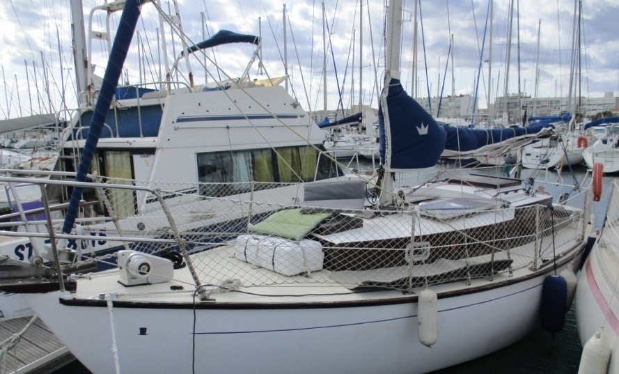

<div style="max-height: 600px; overflow-y: scroll;">
    <div style="display: grid; grid-template-columns: auto auto;">
        
        <div style="padding: 14px;">
            <h2>Ia Orana</h2>
            Milord
        </div>
    </div>
    <div>
        <h2>Le Bateau</h2>
        Ia Orana est le 3<sup><small>eme</small></sup> bateau Passe&#8209;Coque.<br/>
        Il est maintenant chez H&eacute;l&egrave;ne Germain, &eacute;beniste, qui va le r&eacute;nover compl&eacute;tement.<br/>
        Le bateau lui a &eacute;t&eacute; c&eacute;d&eacute; en 2023.<br/>
        <ul>
            <li>longueur de la coque (en m) 7.74</li>
            <li>Largeur de la coque (en m) 2.5</li>
        </ul>
    </div>
    <div>
        <h2>Plus d'infos...</h2>
        R&eacute;f&eacute;rente : H&eacute;l&egrave;ne Germain<br/>
        Email : germain.regis@orange.fr
    </div>
</div>